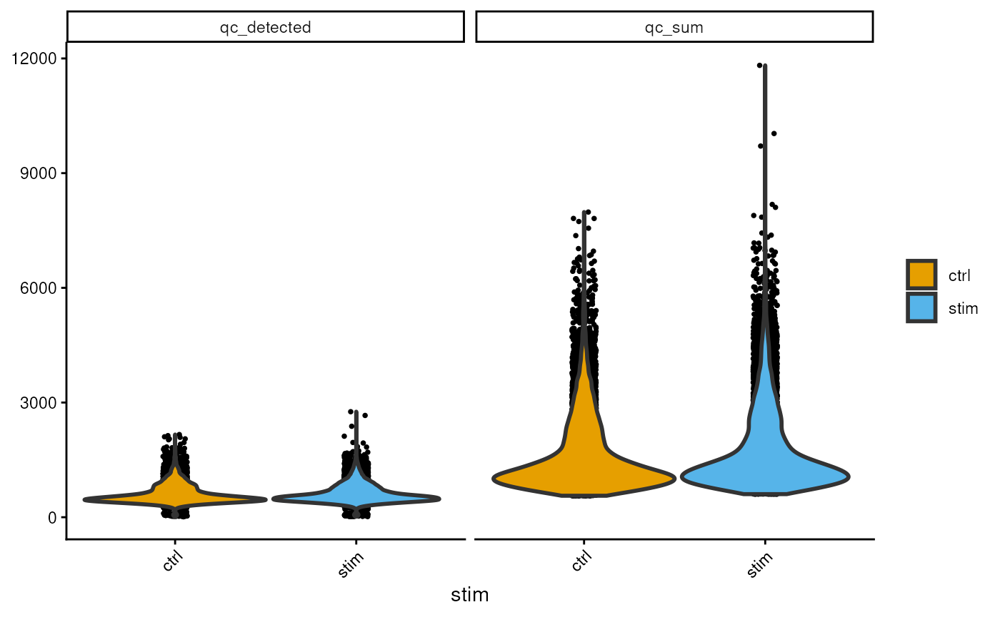

vignettes/scRNAseq_workflow.Rmd
scRNAseq_workflow.Rmd
library(dittoSeq)
#> Loading required package: ggplot2
library(scuttle)
#> Loading required package: SingleCellExperiment
#> Loading required package: SummarizedExperiment
#> Loading required package: MatrixGenerics
#> Loading required package: matrixStats
#>
#> Attaching package: 'MatrixGenerics'
#> The following objects are masked from 'package:matrixStats':
#>
#> colAlls, colAnyNAs, colAnys, colAvgsPerRowSet, colCollapse,
#> colCounts, colCummaxs, colCummins, colCumprods, colCumsums,
#> colDiffs, colIQRDiffs, colIQRs, colLogSumExps, colMadDiffs,
#> colMads, colMaxs, colMeans2, colMedians, colMins, colOrderStats,
#> colProds, colQuantiles, colRanges, colRanks, colSdDiffs, colSds,
#> colSums2, colTabulates, colVarDiffs, colVars, colWeightedMads,
#> colWeightedMeans, colWeightedMedians, colWeightedSds,
#> colWeightedVars, rowAlls, rowAnyNAs, rowAnys, rowAvgsPerColSet,
#> rowCollapse, rowCounts, rowCummaxs, rowCummins, rowCumprods,
#> rowCumsums, rowDiffs, rowIQRDiffs, rowIQRs, rowLogSumExps,
#> rowMadDiffs, rowMads, rowMaxs, rowMeans2, rowMedians, rowMins,
#> rowOrderStats, rowProds, rowQuantiles, rowRanges, rowRanks,
#> rowSdDiffs, rowSds, rowSums2, rowTabulates, rowVarDiffs, rowVars,
#> rowWeightedMads, rowWeightedMeans, rowWeightedMedians,
#> rowWeightedSds, rowWeightedVars
#> Loading required package: GenomicRanges
#> Loading required package: stats4
#> Loading required package: BiocGenerics
#> Loading required package: generics
#>
#> Attaching package: 'generics'
#> The following objects are masked from 'package:base':
#>
#> as.difftime, as.factor, as.ordered, intersect, is.element, setdiff,
#> setequal, union
#>
#> Attaching package: 'BiocGenerics'
#> The following objects are masked from 'package:stats':
#>
#> IQR, mad, sd, var, xtabs
#> The following object is masked from 'package:utils':
#>
#> data
#> The following objects are masked from 'package:base':
#>
#> anyDuplicated, aperm, append, as.data.frame, basename, cbind,
#> colnames, dirname, do.call, duplicated, eval, evalq, Filter, Find,
#> get, grep, grepl, is.unsorted, lapply, Map, mapply, match, mget,
#> order, paste, pmax, pmax.int, pmin, pmin.int, Position, rank,
#> rbind, Reduce, rownames, sapply, saveRDS, scale, sequence, table,
#> tapply, transform, unique, unsplit, which.max, which.min
#> Loading required package: S4Vectors
#>
#> Attaching package: 'S4Vectors'
#> The following object is masked from 'package:utils':
#>
#> findMatches
#> The following objects are masked from 'package:base':
#>
#> expand.grid, I, unname
#> Loading required package: IRanges
#> Loading required package: Seqinfo
#> Loading required package: Biobase
#> Welcome to Bioconductor
#>
#> Vignettes contain introductory material; view with
#> 'browseVignettes()'. To cite Bioconductor, see
#> 'citation("Biobase")', and for packages 'citation("pkgname")'.
#>
#> Attaching package: 'Biobase'
#> The following object is masked from 'package:MatrixGenerics':
#>
#> rowMedians
#> The following objects are masked from 'package:matrixStats':
#>
#> anyMissing, rowMediansAuthors: Michael Lynch2
Last modified: 20th August, 2026.
This workshop introduces the basics of single-cell RNA sequencing (gene expression) and a minimal analysis workflow to students with a background in data science, machine learning, and statistics.
Along with the topic of your workshop, include how students can expect to spend their time. For the description may also include information about what type of workshop it is (e.g. instructor-led live demo, lab, lecture + lab, etc.). Instructors are strongly recommended to provide completely worked examples for lab sessions, and a set of stand-alone notes that can be read and understood outside of the workshop.
2 hours workshop??
| Activity | Time |
|---|---|
| Analysis plan | 30m |
| scRNA-seq workflow | 60m |
| Reflection & Best Practices | 30m |
List “big picture” student-centered workshop goals and learning objectives. Learning goals and objectives are related, but not the same thing. These goals and objectives will help some people to decide whether to attend the conference for training purposes, so please make these as precise and accurate as possible.
Learning goals are high-level descriptions of what participants will learn and be able to do after the workshop is over. Learning objectives, on the other hand, describe in very specific and measurable terms specific skills or knowledge attained. The Bloom’s Taxonomy may be a useful framework for defining and describing your goals and objectives, although there are others.
Divide the workshop into sections (## A Section).
Include fully-evaluated R code chunks. Develop exercises and
solutions, and anticipate that your audience will walk through the code
with you, or work on the code independently – do not be too ambitious in
the material that you present.
library(muscData)
#> Loading required package: ExperimentHub
#> Loading required package: AnnotationHub
#> Loading required package: BiocFileCache
#> Loading required package: dbplyr
#>
#> Attaching package: 'AnnotationHub'
#> The following object is masked from 'package:Biobase':
#>
#> cache
sce<-Kang18_8vs8()
#> see ?muscData and browseVignettes('muscData') for documentation
#> loading from cache
is.mito <- grep('^MT-',rownames(sce))
rownames(sce)[is.mito]
#> [1] "MT-ND1" "MT-ND2" "MT-CO1" "MT-CO2" "MT-ATP8" "MT-ATP6" "MT-CO3"
#> [8] "MT-ND3" "MT-ND4L" "MT-ND4" "MT-ND5" "MT-ND6" "MT-CYB"
rowSums(counts(sce))[is.mito]
#> MT-ND1 MT-ND2 MT-CO1 MT-CO2 MT-ATP8 MT-ATP6 MT-CO3 MT-ND3 MT-ND4L MT-ND4
#> 0 0 0 0 0 0 0 0 0 0
#> MT-ND5 MT-ND6 MT-CYB
#> 0 0 0
sum(rowSums(counts(sce))==0)
#> [1] 16745
library(scuttle)
df <- perCellQCMetrics(sce, subsets=list(Mito=is.mito))
#> Warning in .per_cell_qc_metrics(assay(x, assay.type), subsets = subsets, : 'perCellQCMetrics' is deprecated.
#> Use 'scrapper::computeRnaQcMetrics' instead.
#> See help("Deprecated")
summary(df$sum)
#> Min. 1st Qu. Median Mean 3rd Qu. Max.
#> 562 987 1301 1672 2079 11819
hist(df$subsets_Mito_sum)
sce$qc_sum<-df$sum
sce$qc_detected<-df$detected
## Dimension Reduction
sessionInfo()
#> R version 4.6.1 (2026-06-24)
#> Platform: x86_64-pc-linux-gnu
#> Running under: Ubuntu 24.04.4 LTS
#>
#> Matrix products: default
#> BLAS: /usr/lib/x86_64-linux-gnu/openblas-pthread/libblas.so.3
#> LAPACK: /usr/lib/x86_64-linux-gnu/openblas-pthread/libopenblasp-r0.3.26.so; LAPACK version 3.12.0
#>
#> locale:
#> [1] LC_CTYPE=en_US.UTF-8 LC_NUMERIC=C
#> [3] LC_TIME=en_US.UTF-8 LC_COLLATE=en_US.UTF-8
#> [5] LC_MONETARY=en_US.UTF-8 LC_MESSAGES=en_US.UTF-8
#> [7] LC_PAPER=en_US.UTF-8 LC_NAME=C
#> [9] LC_ADDRESS=C LC_TELEPHONE=C
#> [11] LC_MEASUREMENT=en_US.UTF-8 LC_IDENTIFICATION=C
#>
#> time zone: Etc/UTC
#> tzcode source: system (glibc)
#>
#> attached base packages:
#> [1] stats4 stats graphics grDevices utils datasets methods
#> [8] base
#>
#> other attached packages:
#> [1] muscData_1.27.1 ExperimentHub_3.3.2
#> [3] AnnotationHub_4.3.2 BiocFileCache_3.3.0
#> [5] dbplyr_2.6.0 scuttle_1.23.1
#> [7] SingleCellExperiment_1.35.2 SummarizedExperiment_1.43.0
#> [9] Biobase_2.73.2 GenomicRanges_1.65.1
#> [11] Seqinfo_1.3.1 IRanges_2.47.3
#> [13] S4Vectors_0.51.9 BiocGenerics_0.59.12
#> [15] generics_0.1.4 MatrixGenerics_1.25.0
#> [17] matrixStats_1.5.0 dittoSeq_1.25.0
#> [19] ggplot2_4.0.3
#>
#> loaded via a namespace (and not attached):
#> [1] tidyselect_1.2.1 dplyr_1.2.1 farver_2.1.2
#> [4] blob_1.3.0 Biostrings_2.81.6 filelock_1.0.3
#> [7] S7_0.2.2 fastmap_1.2.0 digest_0.6.39
#> [10] lifecycle_1.0.5 KEGGREST_1.53.6 RSQLite_3.53.3
#> [13] magrittr_2.0.5 compiler_4.6.1 rlang_1.3.0
#> [16] sass_0.4.10 tools_4.6.1 yaml_2.3.12
#> [19] knitr_1.51 labeling_0.4.3 S4Arrays_1.13.0
#> [22] htmlwidgets_1.6.4 bit_4.6.0 curl_8.0.0
#> [25] DelayedArray_0.39.6 RColorBrewer_1.1-3 abind_1.4-8
#> [28] BiocParallel_1.47.0 purrr_1.2.2 withr_3.0.3
#> [31] desc_1.4.3 grid_4.6.1 beachmat_2.29.1
#> [34] colorspace_2.1-3 scales_1.4.0 ggridges_0.5.7
#> [37] cli_3.6.6 crayon_1.5.3 rmarkdown_2.31
#> [40] ragg_1.5.2 otel_0.2.0 httr_1.4.8
#> [43] BiocBaseUtils_1.15.1 DBI_1.3.0 cachem_1.1.0
#> [46] parallel_4.6.1 AnnotationDbi_1.75.2 BiocManager_1.30.27
#> [49] XVector_0.53.0 vctrs_0.7.3 Matrix_1.7-6
#> [52] jsonlite_2.0.0 bit64_4.8.4 ggrepel_0.9.8
#> [55] systemfonts_1.3.2 jquerylib_0.1.4 glue_1.8.1
#> [58] pkgdown_2.2.1 codetools_0.2-20 cowplot_1.2.0
#> [61] gtable_0.3.6 BiocVersion_3.24.0 tibble_3.3.1
#> [64] pillar_1.11.1 rappdirs_0.3.4 htmltools_0.5.9
#> [67] R6_2.6.1 httr2_1.3.0 textshaping_1.0.5
#> [70] evaluate_1.0.5 lattice_0.23-1 png_0.1-9
#> [73] pheatmap_1.0.13 memoise_2.0.1 bslib_0.12.0
#> [76] Rcpp_1.1.2 gridExtra_2.3.1 SparseArray_1.13.2
#> [79] xfun_0.60 fs_2.1.0 pkgconfig_2.0.3University of Limerick↩︎